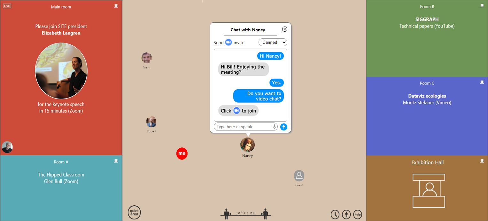
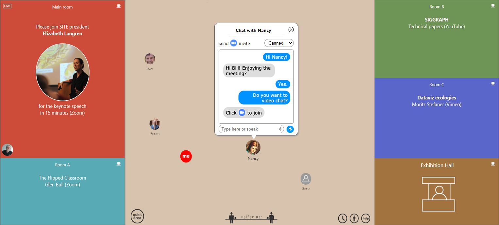

A people-centered virtual meeting tool


èt • al is a new web-app that brings a people-centered approach to virtual meetings, as well as a sense of space. You go to a website that your host has created to serve the meeting’s needs, with any number of virtual meeting rooms and a virtual hallway.
Each attendee has a little icon of their face, showing where they are in the conference. When you move your own icon,the other attendees will see your image move on their screens. Clicking on a room lets you join the presentation via Zoom or live-streaming.
The central hallway provides an opportunity to connect with the other attendees. You can click on their icons, to see their "business card," which brings up information about them, including their website and LinkedIn page.
When you see someone you want to connect with, you can chat with them by typing, speaking, or using preset responses. You can then invite them to video chat and connect, using our built-in video tool, where you can invite others to join you.
You can also serendipitously meet people at the various "coffee bars" in the rooms, where group video chats are always on. When you want some privacy you can go into the quiet area which shields you from view and any incoming chat requests.
You can have any number of virtual "floors," each individually styled. You might add an exhibit hall, and clicking on it would open a new floor containing any number of exhibitor's "booths."
Each booth, in turn, can open up an exhibitor's uniquely styled area, where they could offer demos, videos, information, a chance to chat one-on-one with a sales or technical support person.
The meeting schedule dynamically controls what happens in each of the rooms throughout the conference. You can choose the events you want to be reminded to attend, and it constantly updates what’s happening in the various rooms.
Text chat - Fully integrated text chat between attendees, with missed message box. You can respond by typing, speaking, or using a number of canned responses.
Video chat - Seamlessly integrated video chat allows instant video chat with other attendees. Any number of people can be included in these meetings.
Business cards - Clicking on a person’s icon brings up information about them, including their website and LinkedIn page, if they included them.
Virtual coffee bars - Serendipitous small group video chats with anyone else at the “coffee bars” found in most meeting rooms.
Quiet area - Going into the quiet area shields you from view and incoming chats.
Dynamic schedule - The meeting schedule controls what happens when in each of the rooms. You can choose the events you want to be reminded to attend.
Attendees list - A searchable list of all attendees that want to be public is available to make connections.
Mutliple floors - A meeting can have number of virtual "floors," so concepts like poster sessions and exhibit halls are easily created.
Help desk - Clicking on the Help Desk icon connects you with a person designated to aid attendees.
Completely customizable - Virtual venues are completely customizable with any number of room, color, textures, etc.
Meeting support - We support a large number of virtual meeting systems, including Zoom, WebEx, Jitsi, Teams, YouTube Live and others.
Meeting dashboard - Seamlessly integrated group video chats that with anyone else at the bars in found in most meeting rooms.
Native HTML5 web-app - A modern HTML5 web application and requires no plugs-ins or downloads.
AWS powered - Relies on the Amazon Web Service infrastructure for infinite scalability and high reliability.
èt • al is produced by StageTools, an EMMY-award winning maker of tools for filmmakers and educators since 1995.
For more infomation: